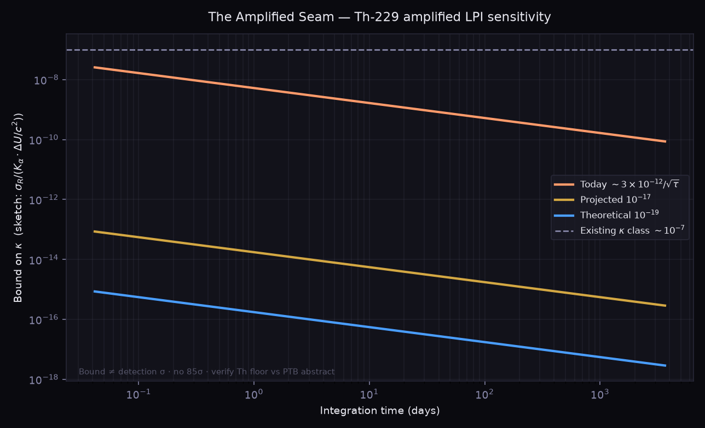

Analysis proposal — not a result.
V4 layers on V3 · The Universality Seam.
We do not claim a violation has been found. We do not claim to invent the first nuclear/electronic ratio (see Zhang et al. 2024).
We propose phase-quadrature analysis of the annual solar potential on existing Th↔Yb⁺ / optical streams — with open code — and we tell the stronger story: Th-229 amplification.
V4.0 — THE AMPLIFIED SEAM
The Amplified Seam
Most sensitive LPI test possible with Th-229 amplification — extending a twenty-year clock-comparison lineage, not inventing it.
Kirk Patrick Miller · Harmonia · Opus · CC · Celeste framing | September 2026 | Open science
Abstract.
Local Position Invariance (LPI) and dilaton-style sector couplings have been probed for twenty years with electronic and hyperfine clocks
(Ashby Cs/H-maser; Fortier Hg⁺/Cs; Guéna Rb/Cs 2012; Lange et al. 2021 Yb⁺/Sr/Cs).
Theory language: Damour–Donoghue dilaton couplings. Hyperfine clocks already touch the strong sector (quark masses / ΛQCD).
The Th-229 nuclear isomer brings amplified sensitivity — Kα ≈ 5900(2300) versus Sr-class Kα ~ 0.06 — so a Th/electronic ratio is ~105 more sensitive to sector-dependent coupling than electronic pairs.
The free annual solar-potential modulation ΔU/c² ≈ 3.3×10−10, read with phase-quadrature against Earth’s orbit, is the correct analysis.
Framing V4 as an analysis proposal for existing PTB-class Th↔Yb⁺ / optical streams — not a request to build a new lab, and not a false “first.”
The undersold prize — amplified K
Th-229’s isomer near-cancellation yields huge K versus sector-dependent couplings. That is the seam V3 reached for with the wrong floor and the wrong “first” claim.
Kα (Th isomer)
~5900
lit. 5900(2300); quark-mass sensitivity larger
Kα (Sr-class)
~0.06
electronic optical reference
Leverage
~105
Th/Sr vs electronic pairs
Bound sketch
κ ≈ σR/(K·ΔU/c²)
a bound is where signal was not seen
Even at today’s published-class Th instability (~3×10−12/√τ; approaching ~10−15 over a day — verify vs PTB public abstract when citing), a year of white-noise averaging points toward κ near 10−10–10−11 versus existing ~10−7-class limits — an honest stronger claim than V3’s wrong-floor 10−8 story.
Free annual signal
ΔU/c² ≈ 3.3×10−10 — the annual solar gravitational potential modulation — is free. Phase-quadrature (cos + sin against the orbital cycle) separates true annual coupling from slow drift. Keep the V2 Poisson post-mortem spirit: honest arithmetic that kills bad methods.
Bound on κ vs integration time
Three Th scenarios: today’s ~3×10−12/√τ · projected 10−17 · theoretical 10−19. Amplification means today’s curve can overtake ~10−7-class limits quickly; the deeper prize is pushing toward 10−10–10−11 with year-scale averaging.

Figure — The Amplified Seam contribution.
Generated by chronal_amplified_seam_v4.py.
Bound ≠ detection significance. No 85σ. Th floor labeled for verification against PTB public abstract.
Systematics
Annual lab temperature as a twin nuisance — fit temperature as a regressor, do not ignore it.
Th:CaF2 ~0.4 kHz/K on some lines — use zero-shift-point operation and a co-thermometer line to suppress thermal uncertainty.
Lunar-tidal cross-check — shorter period template; keep as consistency test.
Three Rivers (named properly)
A two-clock ratio degenerates electromagnetic (α) vs quark-mass / ΛQCD couplings. Add a third species — Yb⁺ E3 (K≈−6) or Cs hyperfine — and three ratios can map both couplings. Chronal V4 must pan out toward that map; this page does not claim Three Rivers solved.
Practical move
PTB-led Th-229 work (June-era lineage): 148 nm subharmonic continuously compared to Yb⁺ — nuclear-vs-electronic ratio already being recorded. Frame V4 as an analysis proposal for such streams, with open code in this repository. Prefer that over asking the world to build a new lab.
Lange et al. 2021 quadrature validation: fail-closed stub in the script until a public ratio series is wired — not yet reproduced beats fake success.
Key references (ancestors)
[1] Ashby et al. — Cs / H-maser annual-modulation / LPI lineage (~2007).
[2] Fortier et al. — Hg⁺ / Cs optical–microwave comparisons.
[3] Guéna et al. 2012 — Rb / Cs.
[4] Lange et al. 2021 — Yb⁺ / Sr / Cs improved limits.
[5] Damour & Donoghue — dilaton couplings to matter (theory language for sector dependence).
[6] Zhang et al. 2024 — Th-229 / Sr frequency ratio (prior nuclear–electronic ratio; not “first invented here”).
[7] PTB / JILA / TU Wien Th-229 nuclear-clock demonstration and ongoing optical comparisons — verify instability numbers against public abstracts when citing.
[8] Prior FreeLattice layers: V3 · V3 report · V4 report.
More
Snowflake / φ market-gauge isomorphism lives on V3 as a layer — quarantined off this physics spine so physicists can read the seam without a market metaphor between abstract and references.
Gift Grove sprites brief (parallel art): GIFT_SPRITES_v0.brief.md.